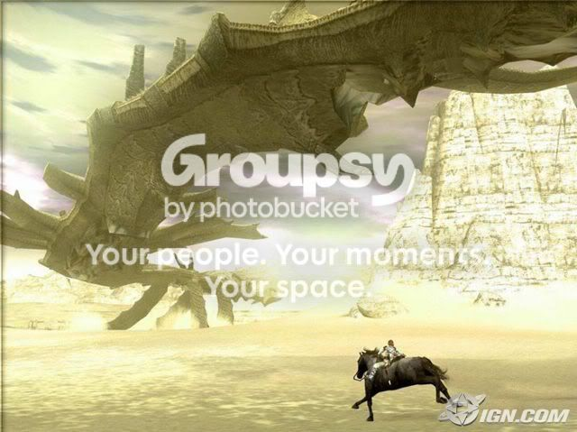
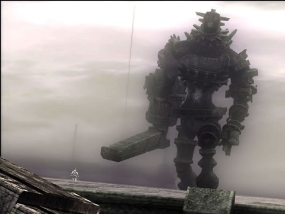
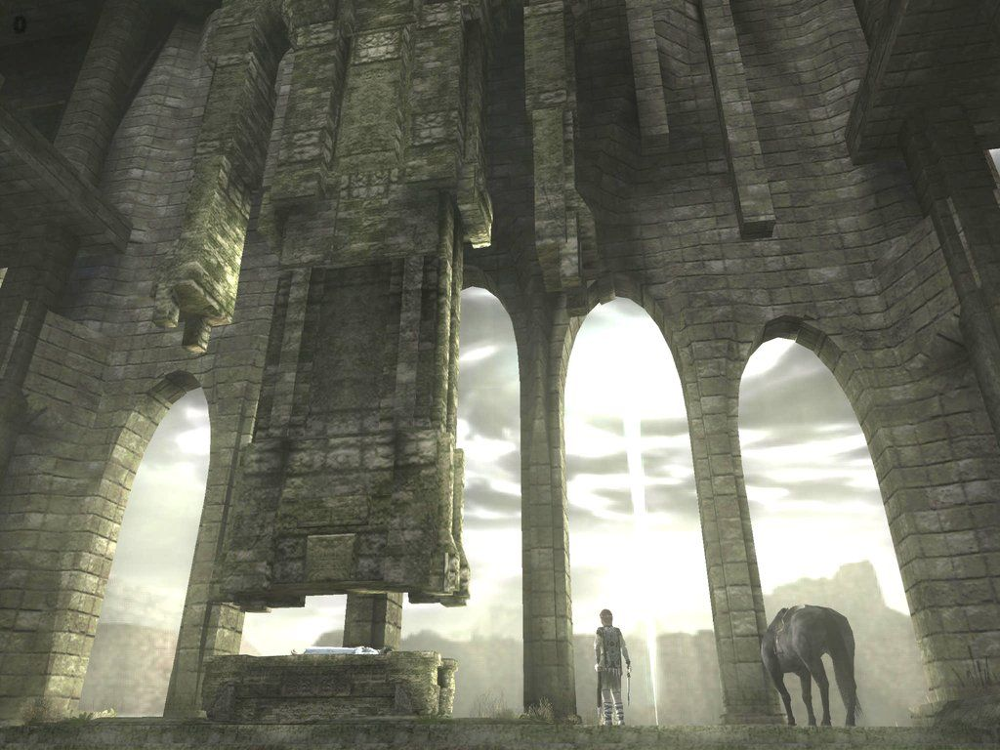
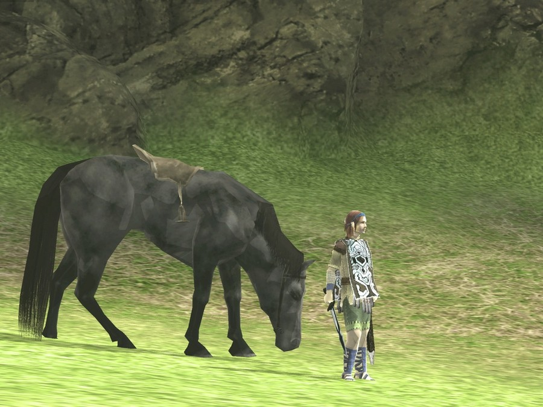

ok, so i finally bought this game and i have to say its worth every penny. the things the hero goes through is ridicules, and the whole reason he's killing these things is to...get this...bring back his dead girlfriend. im sorry but no chick is worth all that unless she's the real deal holyfield. all you have to use to kill the colossus is a sword, bow and arrow, and your horse...thats it. the scenery is absolutly stunning and the colossus look like they would make chuck norris soil himself (ha! take that chuck!).
but when you think about it, these colossus things are nothing more than big friendly giants that just keep to themselves and your're running in and murdering them in cold blood. but on the whole, i'd recomend this game to any gamer, its a must have.
but when you think about it, these colossus things are nothing more than big friendly giants that just keep to themselves and your're running in and murdering them in cold blood. but on the whole, i'd recomend this game to any gamer, its a must have.




 ).
). They're just really slow.
They're just really slow.